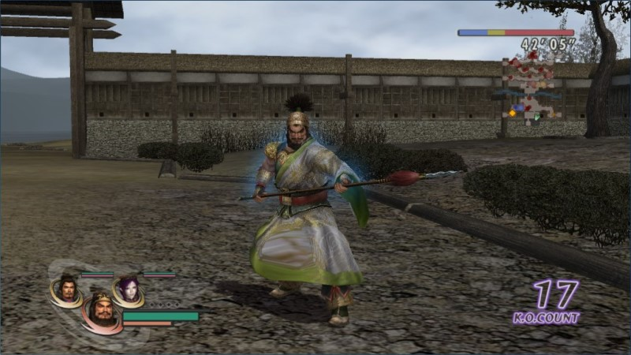

如何換服飾？
遊戲一開始，每位角色都有兩款「造型」可以變更，換穿的方式是在選擇角色加入成員時，按鍵盤的 Tab 或者 PS 手把的△。或者事後也可以在「兵營」→「隊伍情報」→（選擇角色）來變更，不過在進入戰場後無法用這種方式變更，只能在進入戰場前。
如圖，顯示趙雲訊息的欄裡，可以看到有三個人頭，表示可變更三套服飾。發亮的那個則是目前穿著的服飾。
如何解開衣服 (0.0)
第一款造型 初期即可使用
第二款造型 初期即可使用
第三款造型 角色熟練度 10
第四款造型 角色熟練度 20
真．遠呂智、百百目鬼、牛鬼只有一款「造型」。
第四款造型展示

確實是《真．三國無雙 5》的張飛造型！
較貼近真田幸村史實的造型。當年直衝德川家康本陣，差點扭點戰局的英姿重現。
最讓人為之一亮的月英，因為原本包得緊緊的，忽然變成氣質美女，讓人驚豔得不小心會愛上她。
傻瓜信長的造型，那種「這小子前途無量」的感覺油然生起。
卡正經咧！麥擱搞笑啊！竟然把「無印」的第一款造型當第四款。】
【不過這是遊戲裡我最喜歡的造型，因為跑起來很白癡，我很喜歡那種惹人發笑的感覺。